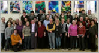

terre des hommes Murgtal/Mittelbaden
terre des hommes Murgtal/Mittelbaden
Der Inhaltsbereich
Das Team
Schreiben Sie uns eine E-Mail oder rufen Sie einen Mitarbeiter an, wir informieren Sie gerne persönlich.
Hier finden Sie eine Liste all unserer aktiven MitarbeiterDie Macher
Alle MacherUnsere Spendenkonten
- Sparkasse
- Baden-Baden / Gaggenau
- Konto Nr. 120 790
- BLZ 662 500 30
- Sparkasse
- Baden-Baden / Gaggenau
- Konto Nr. 120 790
- BLZ 662 500 30